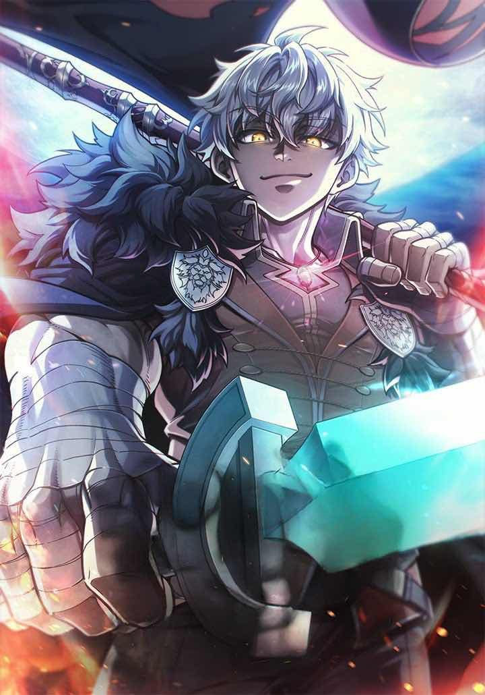

Damn Reincarnation
Sinopsis
Hamel era un guerrero que viajó junto a sus compañeros para derrotar a los Reyes Demonio, pero murió justo antes de la batalla final. 300 años después, se reencarna como Eugene Lionheart, descendiente de su antiguo compañero Vermouth.
Con los recuerdos de su vida pasada y un cuerpo mucho más talentoso, Eugene comienza una nueva aventura para descubrir por qué reencarnó, qué ocurrió durante esos 300 años y terminar aquello que Hamel dejó inconcluso.
Puedes leerla Aqui